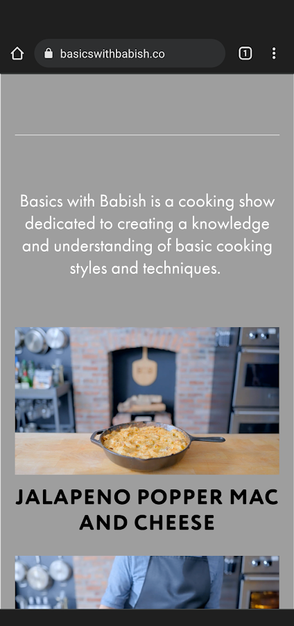

Design Principles Document
By: Darcy Merilan
Visual Hierarchy
Basic with Babish
https://basicswithbabish.co/
Basic with babish website is a good example of visual hierarchy because it shows the hierarchy between between the main heading as it is showing like where to go on the web page, the gift of babish cooking with the elements of Benji the basics showing off in the background him cooking, while on the front ground it shows the basics and the main thing of the website. As we continue going down it shows more elements of the website including a small introduction to cooking ingredients, as well as images with the names of the recipes that he has made, along with links. This is a great example of visual hierarchy because it's showing the visuals of what catches the eye alongside with main headings of what the dishes is and how one can simply interact with the website well.
Parc: Proximity
Internet Movie Database|Imdb
https://www.imdb.com/IMDB's website is a great example of proximity. None of the blocks that are showing the movies or videos of the movies are overlaying one another, and all of them are relatively spaced out to give the user and idea of what is the main thing they are showing, to the things that will be up next for them to see. The spacing between the words and the description are very well as well. Overall IMDb has a relatively good proximity that is very user friendly.
Contrast
HBOmax
https://www.hbomax.com/HBOMax is a great example of contrast. The dark background, mixed in with the white wording is a great use of contrast between colors. None of the thumbnails that they are presenting on their web page clashes with the background as you can clearly see what the thumbnails for each individual movies or show are, while the background color and awarding color do not interfere with it!